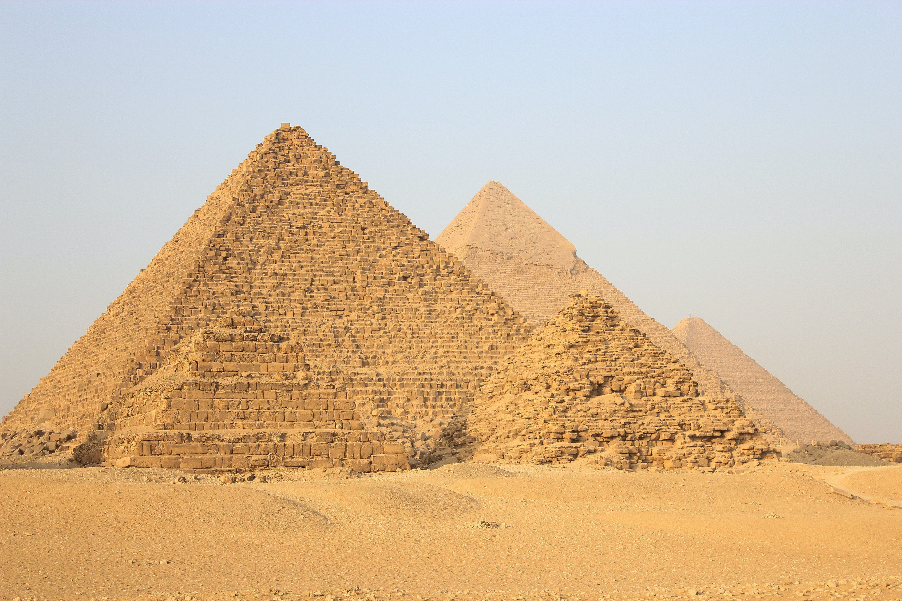
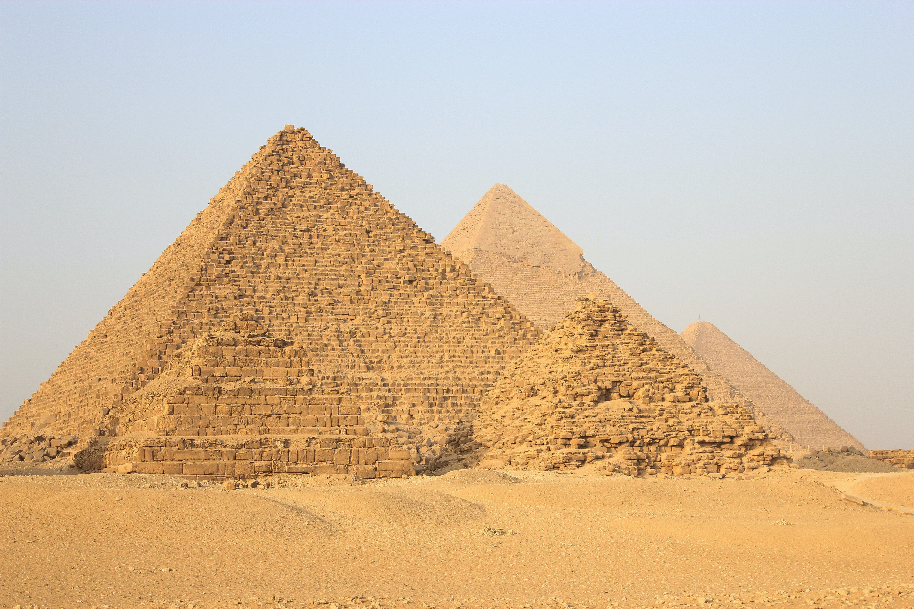
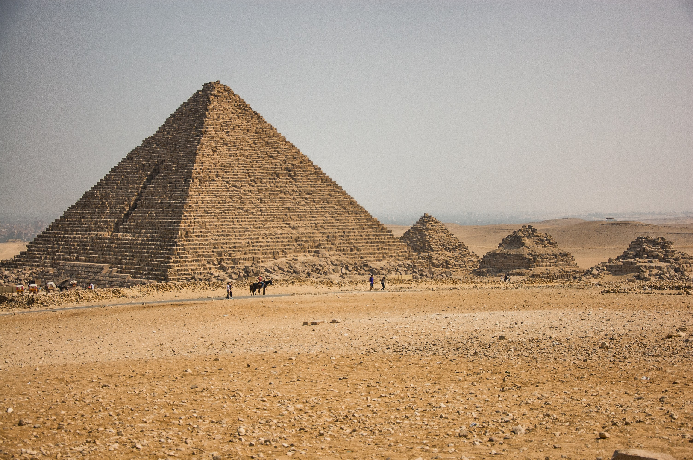
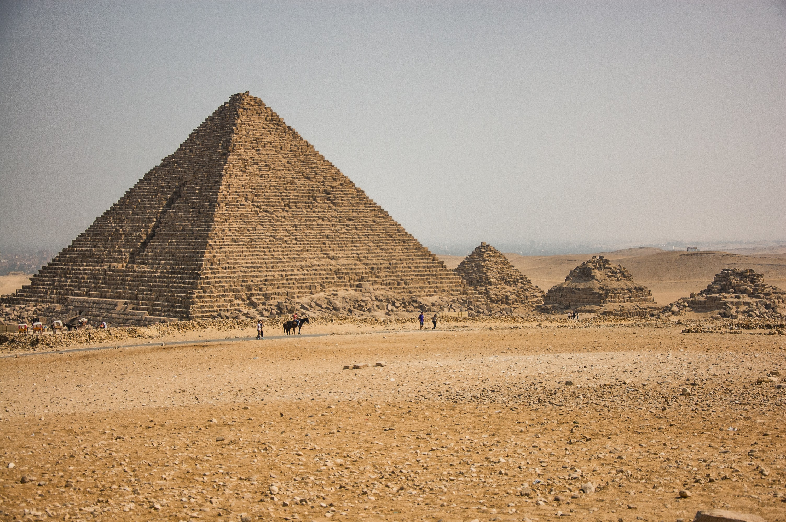
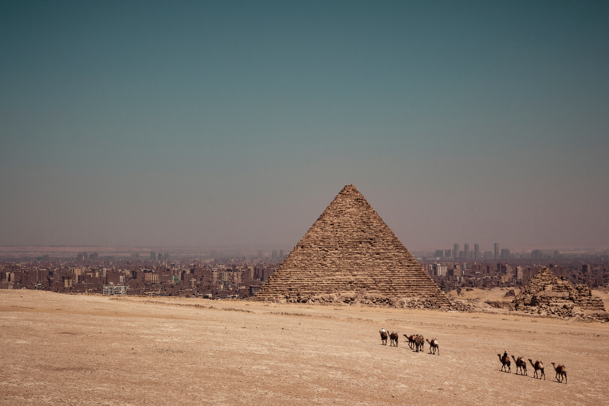
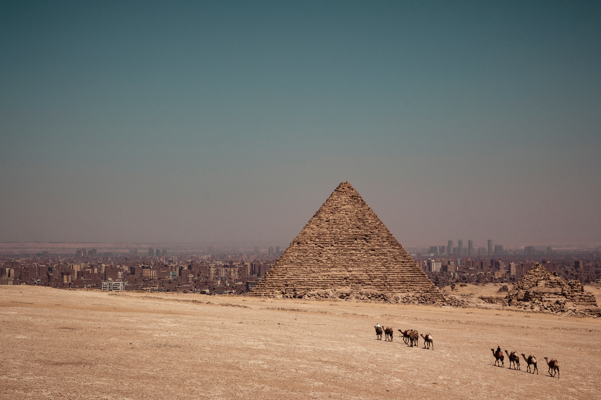

Pyramid of Khufu
The Pyramid Khufu is also called the Great Pyramid. When it was completed in c.2600 BC, it was the tallest building in the world at a height of 481 feet. And, it remained so for the next 3800 years.
Discover Ancient Egyptian Monuments | About Pyramids of Giza
Arabic Name : Ahramat Al-Jizah
Location : Giza Necropolis, Al Haram, Giza Governorate, Egypt
Built by : The ancient Egyptian kings of the 4th dynasty - Khufu, Khafre, and Menkaure
Year of Completion : Khufu (2600 BC), Khafre (2570 BC), Menkaure (2510 BC)
Height : Khufu (451.4 feet or 138 meters), Khafre (448 feet or 136 meters), Menkaure (203 feet or 62 m)
Visitors per year : Around 14.7 million visitors every year

The Pyramid Khufu is also called the Great Pyramid. When it was completed in c.2600 BC, it was the tallest building in the world at a height of 481 feet. And, it remained so for the next 3800 years.
Constructed a bit higher up on the Giza plateau, the Pyramid of Khafre is the second biggest of Giza Pyramids. It was built for Khafre, the son of Pharaoh Khufu in 2570 BC.
The Pyramid of Menkaure is the smallest of the Giza Pyramids. It was completed around 2510 BC. Unfortunately, the sarcophagus of the pharaoh was lost at sea during a voyage in 1838.
The Great Sphinx sits in front of the Pyramid of Khafre. It is a statue of a mythical creature with the head of a man, and the body of a lion. It’s said that the human face of the Great Sphinx was modelled after Pharaoh Khafre.
 

 

 



The worker's village is where the workers who built the Pyramids of Giza lived. It was discovered in 1988 by archaeologist Mark Lehner at the southeast of the Giza necropolis.

Around the Pyramids of the three Pharaohs, there are smaller pyramids belonging to the pharaohs’ queens, mothers, and daughters. These include the tombs of Queen Khentkaus I, and Queen Hetepheres.

Each of the Giza Pyramids have a number of attached temples, including a valley temple were where the bodies of the pharaohs were prepared for burial, and a mortuary temple where priests worshipped the deceased pharaohs.

Near the Great Pyramid of Khufu is the Solar Boat Museum. It was built in 1985 to house the reconstructed solar boat of the pharaoh. This was the ship buried with the king to use on his journey across the heavens.

The Great Sphinx sits in front of the Pyramid of Khafre. It is a statue of a mythical creature with the head of a man, and the body of a lion. It’s said that the human face of the Great Sphinx was modelled after Pharaoh Khafre.

The Pyramid of Menkaure is the smallest of the Giza Pyramids. It was completed around 2510 BC. Unfortunately, the sarcophagus of the pharaoh was lost at sea during a voyage in 1838.
It was our dream to visit and touch the Pyramids in Cairo, Egypt.
Am Montag
Had a great time and experience seeing pyramids for the first time.
Am Freitag
A very wonderful place. I hope to visit it again 🤩 I love Egypt.

Am Sonntag